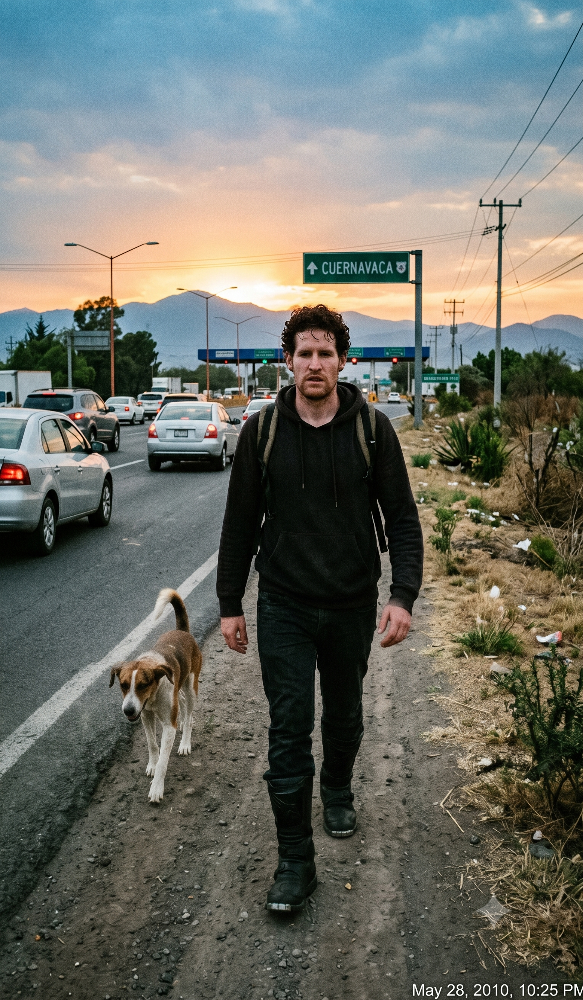

Walking
Originally written May 2010 • Uploaded to Facebook on May 28, 2010, 10:25 PM

It was a full year after my first optical migraine attack that I actively began to walk the city streets. At seventeen, I was thoroughly awestruck by how completely a single neurological episode could strip away my autonomy. First, it was the lights—a sudden, blinding aura that would completely wipe out my vision until I could see absolutely nothing. I lived in a state of constant terror of being trapped inside Mexico City's suffocating gridlock when an attack hit, entirely losing my eyesight behind the wheel.
Then came the catastrophic loss of speech, both verbal and written. Composing a simple sentence on a piece of paper became an impossible task. If I attempted to write out the familiar letters of my own name, my brain couldn't process the lines; I would only see weird, unrecognizable scribbles and alien symbols. If I tried to articulate what was happening to someone nearby, my tongue would go entirely limp, dragging down the side of my mouth as my vocal cords failed, leaving me only capable of grunting a solitary, repetitive word: *“I.”*
Then came the terrifying jumbling of my motor skills. If I wanted to move my right hand, I had to resort to plotting out the action with agonizing, deliberate focus just to trigger the muscles. It reached a point where I couldn't even command my own legs. A bizarre, absolute anesthesia would drop over my entire frame, a physical paralysis I simply could not snap out of. I would desperately gesture for people to help me walk—just to get to a safe station or signal for medical help—but it was the profound despair of not understanding the root cause of this biology that destroyed my morale.
I fell into a dark loop, convinced that this structural decay was exclusive to my body, that I was enduring the absolute worst affliction a human being could face. My internal thoughts were just as fractured as my physical control. I couldn't even find refuge in sleep; a chronic, aggressive tingling sensation buzzed through my limbs, a cruel reminder that I was trapped inside a compromised casing.
Once, in the absolute thick of an attack, I stubbornly attempted to write a high school exam. The paper I handed in was a total disaster—a meaningless soup of nouns and verbs violently jumbled together, my signature reduced to an unrecognizable blur. Everything I had meticulously studied for weeks was trapped behind an optical wall of scratches and dots. I could offer no logical explanation to the faculty. The teachers took one look at my slurred speech and uncoordinated movements and instantly assumed I was high on heavy drugs. A select few of my classmates certainly were, but they at least carried the telltale red eyes and smoky odor to validate their lifestyle; I had nothing but a lanky, dysfunctional frame and a stuttering slur no one could comprehend.
I quickly learned to read the early warnings. The cycle was always identical, and true to some twisted cosmic clock, it almost universally struck during class time—the exact window where I most dreaded being stripped of my faculties. Discussing this volatile transition from perfect health to total helplessness was an impossible barrier; I couldn't find a single soul who shared these bizarre neurological symptoms. The final insult of the anatomy was that after enduring four long hours of blindness, paralysis, and absolute cognitive isolation, the aura would lift only to reward me with a blinding, localized headache that would last for days. I was completely alone in my illness. My immediate circle assumed I was cynically inventing the symptoms for attention, writing it off as basic adolescent drama and typical behavioral trouble. I rotated through a succession of clinical doctors, tried alternative acupuncture, and studied Tai Chi, but nothing could halt the onset. To this day, I am entirely convinced that it was my physical departure from high school that permanently broke the back of those attacks.
What saddened me most about the hateful note asking me to stop writing was the sender's assumption that I was being manipulative—that I was falsely trying to rekindle a relationship that had drifted into embers simply because I left to explore the world six years ago. The writer felt I was trying to extract affection that wasn't mine to claim, arguing that I shouldn't seek deep bonds where there was no direct blood relation. To me, blood makes no difference. It is when we share our personal stories that we truly connect as human beings. Even if our stories aren't the happiest or the funniest, we can all welcome the comforting knowledge that someone out there is thinking of us, that someone took the time to write, and that we are held in someone's heart. If I write you a letter, it means you are on my mind, and I am actively trying to send my love from a long way off. If I needed money, I wouldn't write a relative; I would write a bank. Duh, I'm not that stupid.
One dark afternoon, with family tensions boiling over at home, my father looked at me and casually suggested I go take a walk outside. It felt like a radical proposition; I had never once gone for a walk purely for leisure before, having been raised under the constant, paranoid assumption that stepping onto the pavement in Mexico City meant risking an immediate stabbing, a kidnapping, or a violent mugging. But the atmosphere in the house had become completely insufferable, and I was thrilled for an excuse to cross the threshold.
I stepped onto the asphalt, and that solitary stroll initiated an obsession with long-distance pedestrian endurance that has since pushed me to undertake the weirdest adventures on foot. Those early excursions were short-lived. I would navigate a few blocks away, duck into a local corner store to buy a soda, step back onto the curb, and trace my steps home. That initial loop didn't clear twenty-five minutes; I simply had no concept of how a human being was supposed to behave or navigate when dropped onto the open grid alone.
Slowly, however, these walks transformed into a mandatory daily script. Domestic life was growing increasingly suffocating, and my academic homework felt less interesting by the hour. I expanded my boundaries, exploring the familiar sectors of my neighborhood independently for the first time in my life. It became a routine habit of mine to march over to my friends' houses and knock on their doors unannounced, but true to my luck, they were almost never home. So, I turned my focus toward raw exploration. I wasn't doing it because I was obsessing over my health or terrified that I would drop dead soon; I did it because I was nearing the final semester of high school and realized I knew absolutely nothing about the massive, chaotic capital I inhabited—a city I knew with absolute certainty I would soon be leaving forever.
I had also grown up hearing legendary family stories about an eccentric uncle who used to walk everywhere, routinely marching all the way from the capital down to Cuernavaca—a distance most people only conceived of as an hour-long highway drive. His footsteps proved to me that the human frame was capable of crossing state lines, and before long, I was logging six hours or more a day on the pavement. I would slide through the front door deep into the night, blinking against the foyer lights as my family demanded to know where on earth I had been all day. Many of those miles were logged in a total cognitive daze as I desperately tried to sort out the internal bottlenecks of my life.
Inevitably, I decided to set out for Cuernavaca on foot. Earlier that year, I had purchased a pair of massive, heavy, steel-toe motorcycle boots that I wore everywhere. They weighed at least a kilo and a half each, clunking heavily against the concrete, but they made me feel completely powerful and structurally armored against the world. I tucked a few hundred pesos into my pockets, packed an MP3 player, a heavy hoodie, and a single bottle of water into my backpack, and laced up the boots.
I departed early in the morning. It took me six hours of continuous marching just to reach the outermost industrial borders of Mexico City. Right before I hit the city limits, a stray dog materialized from an alley and joined my line. It paced me for an hour, matching my speed step-for-step. I felt a wave of intense guilt because I carried no food in my pack, and I couldn't bring myself to aggressively shoo the creature away. When I finally reached the massive concrete toll plazas marking the highway exit to the next state, I approached a roadside vendor and bought a sandwich for the animal. But the moment I turned around with the food, the dog had vanished into the traffic lines, and I never saw it again.
I pocketed the food, marched straight past the tollbooths, and stepped onto the shoulder of the major tollway. That was where the real madness began. Navigating a high-speed interstate highway where motorists flat-out do not expect a pedestrian to exist is a profoundly terrible idea. The layout was highly dangerous. As I struggled up the mountain passes, massive commercial buses would thunder down the descent at extreme speed, hugging the shoulder line and heading straight for my coordinates. Terrified, I was forced to repeatedly throw my frame off the curb, balancing on the edge of steep, rocky precipices to avoid being pulverized by the iron. It wasn't romantic, and it wasn't fun.
I endured this exhausting, terrifying cycle for an hour and a half before reality checked my hubris; I realized that continuing down this highway would get me killed before nightfall. I finally pulled off at a small scenic overlook where a fleet of emergency vehicles was actively combating a forest fire. I struck up a conversation with the crew, meeting a wild firefighter who had literally fallen twenty meters down a ravine minutes earlier yet stood there looking completely unbothered.
After a few minutes of banter, I looked at the long, grueling asphalt leading up into the mountains and surrendered. I asked the crew if I could hitch a ride back into the capital inside one of the apparatuses. My pride was a bit dented, but I was far too physically exhausted and depressed by the realization that I lacked the raw strength to finish the state-line crossing to care. They generously agreed, letting me ride in the cabin before dropping me off a few kilometers below the toll plaza.
I stepped back onto the city streets and proceeded to walk the entire distance back to my house—a grueling six-hour return march in those heavy motorcycle boots. I finally crossed my own threshold late that night to discover that absolutely nothing had changed in the house. My family was completely oblivious to the scale of the miles I had logged. I sat in my room, my muscles aching with an intense, deep fatigue after a failed, twelve-hour trek to cross into the next state on foot, feeling completely alienated from the domestic reality around me. I looked at the familiar walls and wondered how I could ever seamlessly return to this baseline routine after staring down the highway monsters. It was in that precise moment of exhaustion that I finally realized the true truth: once you begin taking real physical risks and exploring the landscape lines, your internal geography changes forever, and there is no way to ever walk back.